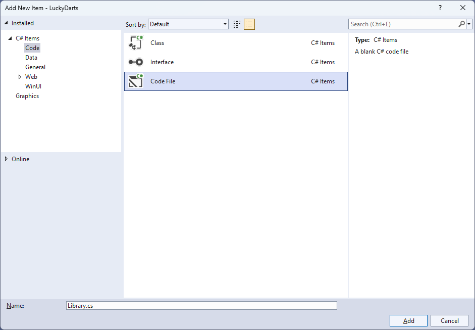

Lucky Darts
Learn creating a Lucky Darts game using Windows App SDK with this Tutorial
Lucky Darts shows how you can create a darts game with a random chance of hitting the right spot on the dartboard using a control in a toolkit from NuGet using the Windows App SDK.
Step 1
Follow Setup and Start on how to get Setup and Install what you need for Visual Studio 2022 and Windows App SDK.


Step 2
Then in Visual Studio within Solution Explorer for the Solution, right click on the Project shown below the Solution and then select Manage NuGet Packages...

Step 3
Then in the NuGet Package Manager from the Browse tab search for Comentsys.Toolkit.WindowsAppSdk and then select Comentsys.Toolkit.WindowsAppSdk by Comentsys as indicated and select Install

This will add the package for Comentsys.Toolkit.WindowsAppSdk to your Project. If you get the Preview Changes screen saying Visual Studio is about to make changes to this solution. Click OK to proceed with the changes listed below. You can read the message and then select OK to Install the package, then you can close the tab for Nuget: LuckyDarts by selecting the x next to it.
Step 4
Then in Visual Studio within Solution Explorer for the Solution, right click on the Project shown below the Solution and then select Add then New Item…

Step 5
Then in Add New Item from the C# Items list, select Code and then select Code File from the list next to this, then type in the name of Library.cs and then Click on Add.

Step 6
You will now be in the View for the Code of Library.cs, within this type the following Code:
using Comentsys.Toolkit.WindowsAppSdk;
using Microsoft.UI;
using Microsoft.UI.Xaml;
using Microsoft.UI.Xaml.Controls;
using Microsoft.UI.Xaml.Input;
using Microsoft.UI.Xaml.Media;
using Microsoft.UI.Xaml.Shapes;
using System;
using Windows.Foundation;
using Windows.UI;
public class Library
{
private const string title = "Lucky Darts";
private const int radius = 200;
private const int circle = 360;
private const int triple = 250;
private const int offset = 40;
private const int chance = 5;
private const int size = 500;
private const int dart = 10;
private const int bull = 20;
private const int ring = 10;
private const int font = 25;
private const int line = 2;
private static readonly int[] numbers =
{
20, 1, 18, 4, 13, 6, 10, 15, 2, 17,
3, 19, 7, 16, 8, 11, 14, 9, 12, 5
};
private static readonly double section =
circle / numbers.Length;
private readonly Random _random = new((int)DateTime.UtcNow.Ticks);
private int _score = 0;
private Dialog _dialog;
private Canvas _canvas;
private Piece _dart;
// Is Odd, Get Ellipse, Add Circle & Get Sector
// Add Section, Get Text & Add Text
// Add Dart & Get Number
// Get Score, Play & Add Board
// Layout & New
}
The Class that has been defined in so far Library.cs has using for the package of Comentsys.Toolkit.WindowsAppSdk and others.
Step 7
While still in the Class for Library.cs and after the Comment of // Is Odd, Get Ellipse, Add Circle & Get Sector type in the following
Methods:
private bool IsOdd(int value) =>
value % 2 != 0;
private Ellipse GetEllipse(double diameter, Color fill) => new()
{
Width = diameter,
Height = diameter,
StrokeThickness = line,
Fill = new SolidColorBrush(fill),
Stroke = new SolidColorBrush(Colors.WhiteSmoke)
};
private void AddCircle(Canvas canvas, double diameter, Color fill)
{
var circle = GetEllipse(diameter, fill);
Canvas.SetLeft(circle, (size - diameter) / 2);
Canvas.SetTop(circle, (size - diameter) / 2);
canvas.Children.Add(circle);
}
private Sector GetSector(double start, double finish,
double radius, double hole, Color fill)
{
Sector sector = new()
{
Hole = hole,
Start = start,
Finish = finish,
Radius = radius,
StrokeThickness = line,
Fill = new SolidColorBrush(fill),
Stroke = new SolidColorBrush(Colors.WhiteSmoke)
};
Canvas.SetLeft(sector, (size - radius * 2) / 2);
Canvas.SetTop(sector, (size - radius * 2) / 2);
return sector;
}
IsOdd is used to determine if the number is odd or even, GetEllipse will get an Ellipse to be used with AddCircle and GetSector
will use the Sector control from the toolkit and set it up as needed.
Step 8
While still in the Class for Library.cs after the Comment of // Add Section, Get Text & Add Text
type in the following Methods:
private void AddSection(Canvas canvas, int index, double start)
{
var finish = section;
var sector = GetSector(start, finish, radius, bull,
IsOdd(index) ? Colors.Black : Colors.MintCream);
var doubleRing = GetSector(start, finish, radius, radius - ring,
IsOdd(index) ? Colors.MediumSeaGreen : Colors.OrangeRed);
var tripleRing = GetSector(start, finish, triple / 2, triple / 2 - ring,
IsOdd(index) ? Colors.MediumSeaGreen : Colors.OrangeRed);
canvas.Children.Add(sector);
canvas.Children.Add(doubleRing);
canvas.Children.Add(tripleRing);
}
private TextBlock GetText(string value)
{
var text = new TextBlock()
{
Foreground = new SolidColorBrush(Colors.WhiteSmoke),
TextAlignment = TextAlignment.Center,
FontSize = font,
Text = value
};
text.Measure(new Size(
double.PositiveInfinity,
double.PositiveInfinity));
return text;
}
private void AddText(Canvas canvas, int index, double start)
{
var text = GetText($"{numbers[index]}");
double angle = start * Math.PI / (circle / 2);
double width = canvas.ActualWidth / 2;
double height = canvas.ActualHeight / 2;
double left = width + (width - font) * Math.Cos(angle)
- text.DesiredSize.Width / 2;
double top = height + (height - font) * Math.Sin(angle)
- text.DesiredSize.Height / 2;
Canvas.SetLeft(text, left);
Canvas.SetTop(text, top);
canvas.Children.Add(text);
}
AddSection will create a section of the dartboard using GetSector and GetText will create a
TextBlock for the numbers to be used by AddText which positions the numbers on the dartboard.
Step 9
While still in the Class for Library.cs after the Comment of // Add Dart & Get Number type the following Methods:
private void AddDart(Point point)
{
_canvas.Children.Remove(_dart);
_dart = new Piece()
{
Width = dart,
Height = dart,
Name = nameof(_dart),
Fill = new SolidColorBrush(Colors.SlateGray),
Stroke = new SolidColorBrush(Colors.DarkGray)
};
Canvas.SetLeft(_dart, point.X - dart / 2);
Canvas.SetTop(_dart, point.Y - dart / 2);
_canvas.Children.Add(_dart);
}
private int GetNumber(double degrees) =>
degrees switch
{
>= 351 => 6,
>= 333 => 10,
>= 315 => 15,
>= 297 => 2,
>= 279 => 17,
>= 261 => 3,
>= 243 => 19,
>= 225 => 7,
>= 207 => 16,
>= 189 => 8,
>= 171 => 11,
>= 153 => 14,
>= 135 => 9,
>= 117 => 12,
>= 99 => 5,
>= 81 => 20,
>= 63 => 1,
>= 45 => 18,
>= 27 => 4,
>= 9 => 13,
_ => 6
};
AddDart will position the dart on the dartboard with a given position and GetNumber will get the number of the dartboard based upon the angle passed in.
Step 10
While still in the Class for Library.cs after the Comment of // Get Score, Play & Add Board type the following Methods:
private int GetScore(Point point)
{
double x = point.X - size / 2;
double y = size / 2 - point.Y;
double radians = Math.Atan2(y, x);
int degrees = (int)(radians * (circle / 2) / Math.PI);
degrees = degrees < 0 ? circle + degrees : degrees;
int number = GetNumber(degrees);
var length = (int)Math.Floor(Math.Sqrt(x * x + y * y));
return length switch
{
>= radius => 0,
>= radius - ring and <= radius => number * 2,
>= triple / 2 - ring and <= triple / 2 => number * 3,
>= bull - ring and <= bull => 25,
<= bull / 2 => 50,
_ => number
};
}
private void Play(Point point)
{
var x = _random.Next((int)point.X - offset, (int)point.X + offset);
var y = _random.Next((int)point.Y - offset, (int)point.Y + offset);
var hit = IsOdd(_random.Next(0, chance)) ? point : new Point(x, y);
var score = GetScore(hit);
_score += score;
AddDart(hit);
_dialog.Show($"Scored {score}, Total {_score}");
}
private void AddBoard(Canvas canvas, double diameter)
{
var board = GetEllipse(diameter, Colors.Transparent);
board.Tapped += (object sender, TappedRoutedEventArgs e) =>
Play(e.GetPosition(canvas));
Canvas.SetLeft(board, (size - diameter) / 2);
Canvas.SetTop(board, (size - diameter) / 2);
canvas.Children.Add(board);
}
GetScore will work out the score of the position on the dartboard, taking into account the double ring, triple ring,
outer bullseye and the inner bullseye. Play will position the dart on the dart board in a randomised location near
where was selected and then the score will be updated accordingly and is used in AddBoard which will add a transparent
Ellipse which will capture Events when it is Tapped.
Step 11
While still in the Class for Library.cs after the Comment of // Layout & New type the following Methods:
private void Layout(Grid grid)
{
grid.Children.Clear();
_canvas = new Canvas()
{
Width = size,
Height = size
};
var start = -(section / 2);
AddCircle(_canvas, size, Colors.Black);
AddCircle(_canvas, (radius * 2) + (line * 2), Colors.WhiteSmoke);
for (int index = 0; index < numbers.Length; index++)
{
AddSection(_canvas, index, start);
AddText(_canvas, index, start + (section / 2) - (circle / 4));
start += section;
}
AddCircle(_canvas, bull * 2, Colors.MediumSeaGreen);
AddCircle(_canvas, bull, Colors.OrangeRed);
AddBoard(_canvas, size);
grid.Children.Add(_canvas);
}
public void New(Grid grid)
{
_score = 0;
_dialog = new Dialog(grid.XamlRoot, title);
Layout(grid);
}
Layout will create the look-and-feel of the dartboard and New will start a new game.
Step 12
Step 13
In the XAML for MainWindow.xaml there will be some XAML for a StackPanel, this should be Removed:
<StackPanel Orientation="Horizontal"
HorizontalAlignment="Center" VerticalAlignment="Center">
<Button x:Name="myButton" Click="myButton_Click">Click Me</Button>
</StackPanel>
Step 14
While still in the XAML for MainWindow.xaml above </Window>, type in the following XAML:
<Grid>
<Viewbox>
<Grid Margin="50" Name="Display"
HorizontalAlignment="Center"
VerticalAlignment="Center" Loaded="New"/>
</Viewbox>
<CommandBar VerticalAlignment="Bottom">
<AppBarButton Icon="Page2" Label="New" Click="New"/>
</CommandBar>
</Grid>
This XAML contains a Grid with a Viewbox which will Scale a Grid.
It has a Loaded event handler for New which is also shared by theAppBarButton.
Step 15
Step 16
In the Code for MainWindow.xaml.cs there be a Method of myButton_Click(...) this should be Removed by removing the following:
private void myButton_Click(object sender, RoutedEventArgs e)
{
myButton.Content = "Clicked";
}
Step 17
Once myButton_Click(...) has been removed, within the Constructor of public MainWindow() { ... } and below the line of this.InitializeComponent(); type in the following Code:
private readonly Library _library = new();
private void New(object sender, RoutedEventArgs e) =>
_library.New(Display);
Here an Instance of the Class of Library is created then below this is the Method of New that
will be used with Event Handler from the XAML, this Method uses Arrow Syntax with the => for an Expression Body which is
useful when a Method only has one line.
Step 18
Step 19
Once running you can then select anywhere on the dartboard to try and see if you can get that score but there's a random chance you won't hit that spot and see what score you can get or select New to restart the game.
Step 20